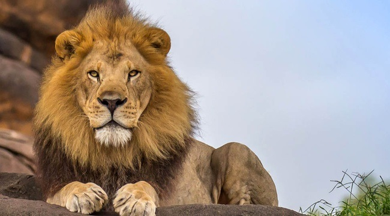

Wildlife conservation is the practice of protecting plant and animal species and their habitats. As part of the world’s ecosystems, wildlife provides balance and stability to nature’s processes. The goal of wildlife conservation is to ensure the survival of these species, and to educate people on living sustainably with other species.

What is wildlife conservation?
Wildlife conservation is the practice of protecting plant and animal species and their habitats. As part of the world’s ecosystems, wildlife provides balance and stability to nature’s processes. The goal of wildlife conservation is to ensure the survival of these species, and to educate people on living sustainably with other species.The human population has grown exponentially over the past 200 years, to more than seven billion people today, and it continues to rapidly grow. This means natural resources are being consumed faster than ever by the billions of people on the planet. This growth and development also endangers the habitats and existence of various types of wildlife around the world, particularly animals and plants that may be displaced for land development, or used for food or other human purposes. Other threats to wildlife include the introduction of invasive species from other parts of the world, climate change, pollution, hunting, fishing, and poaching.
Threats to Wildlife
Wildlife on planet Earth is under siege from all sides, facing down habitat loss and the impact of climate change. Some of the biggest threats to wildlife include illegal wildlife trade, habitat destruction, invasive species, pollution, and clime change.
1. ILLEGAL WILDLIFE TRADE
The illegal wildlife trade is the fourth largest criminal industry in the world, after drugs, arms, and human trafficking. Gathering in over $US20 billion a year, it is also one of the biggest threats to some of the most iconic species on the planet, like the rhino and the elephant.
2. HABITAT WILDLIFE DESTRUCTION
The fires that swept across the Amazon and Australia rightly drew attention to just how fragile the most important ecosystems are. Half of the world’s original forests are gone, and what remains is being cut down ten times faster than it can be replaced.
3. INVASIVE SPECIES
Whether accidentally or intentionally introduced, the non-native species grow and reproduce rapidly, then spread across ecosystems aggressively. They are one of the leading threats to native wildlife, putting 42% of threatened or endangered species at risk.
4. POLLUTION
There are 500 times more pieces of microplastic in the sea than there are stars in our galaxy. Eight hundred million tonnes of plastic are dumped into the ocean each year, washing up on previously pristine parts of the planet and is a threat to the survival of more than 600 species of marine wildlife.
5. CLIMATIC CHANGE
From more regular and fiercer storms to more prolonged and more intense droughts, the impact of climate change is rising ocean temperatures and diminishing Arctic sea ice affecting marine biodiversity, shifting vegetation zones and forcing species to adapt to new conditions.
Steps to conserve Wildlife
Like forests, wildlife is also a national resource which not only helps in maintaining the ecological balance but is also beneficial from economic, recreational and aesthetic points of view.
Some steps in the direction of wildlife conservation that can be taken are as follows:
(i) To survey and collect all the information about wildlife, especially, their number and growth.
(ii) To protect habitat by protecting forests.
(iii) To delimit the areas of their natural habitat.
(iv) To protect wildlife from pollution and from natural hazards. (v) To impose complete restriction on hunting and capturing of wildlife.
(vi) To impose restrictions on export and import of wildlife products and severe punishment to be given to those who indulge in this activity.
(vii) To develop game sanctuaries for specific wild animals or for general wildlife.
(viii) To make special arrangements to protect those species whose number is very limited.


/roosevelt-elk-cervus-elaphus-roosevelti-in-a-cut-forest-east-coast-near-telegraph-cove-vancouver-island-british-columbia-canada-july-590532428-5897a5553df78caebc299a6b.jpg)